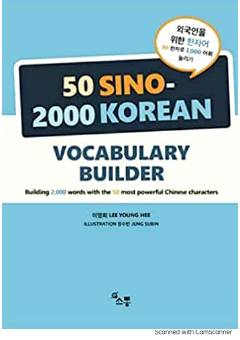

5SSino-koreys so'zlarini o'rganish uchun 2000 ta so'zdan iborat amaliy qo'llanma.
Ushbu qo'llanma koreys tilidagi sino-koreys so'zlarini o'rganish uchun mo'ljallangan bo'lib, 50 ta unitdan iborat. Kitob 2000 ta eng ko'p ishlatiladigan so'zlarni ularning tarkibiy qismlari va ma'nolari orqali tizimli ravishda tushuntiradi.